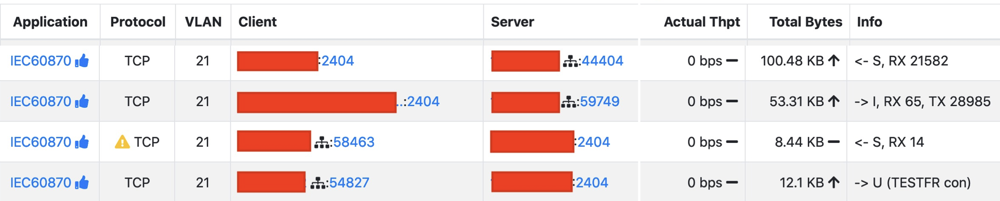
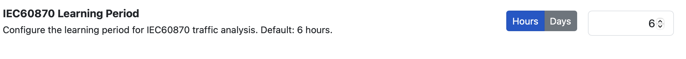
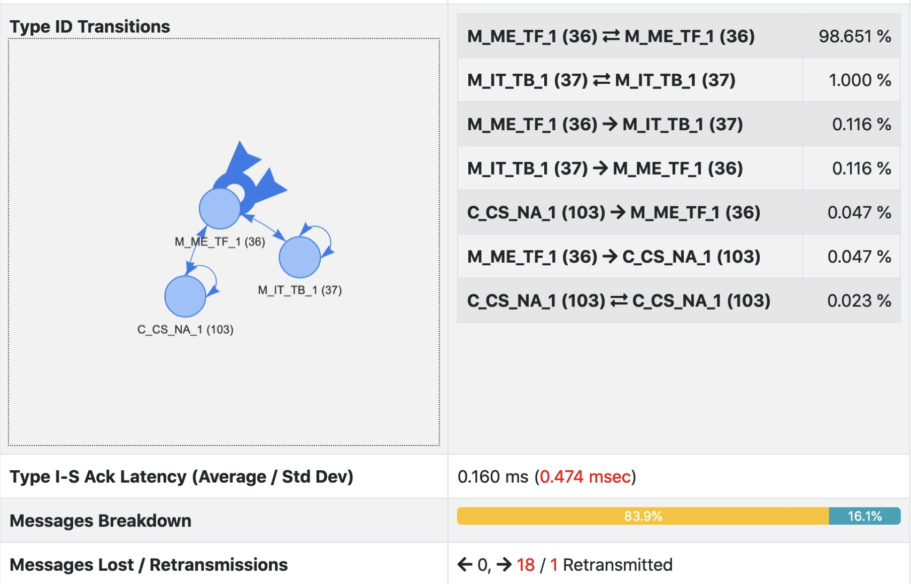
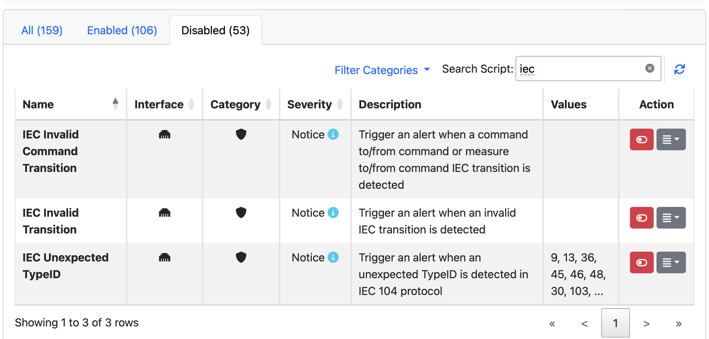

4. IEC 60870-5-104
IEC 60870-5-104 — протокол, используемый в основном в электротехнике и автоматизации энергосистем. Этот протокол обнаруживается ntopng и анализируется с течением времени, обнаруживая изменения в поведении каждого сетевого потока.
Для каждого потока IEC ntopng рассекает потоковые коммуникации.

и отчеты в режиме реального времени о статистике трафика. В дополнение к этому ntopng изучает переходы протокола, настроенные в настройках, поскольку каждый поток IEC имеет разные особенности и переходы, для которых создается модель.

В течение заданного времени ntopng строит модель для каждого потока, чтобы понять, как он ведет себя с течением времени. Когда период обучения потока заканчивается, ntopng сопоставляет трафик с моделью и запускает оповещение всякий раз, когда

На странице бахэвиоральных проверок вы можете включить определенные проверки протокола.

IEC Неверный переход команды
Недопустимый номер перехода (CC > 10 и M-M/M-C/C-< == 0).
IEC Неверный переход
Оповещение срабатывает, когда после периода обучения IEC обнаруживается новый переход (ранее не наблюдавшийся).
IEC Неожиданный идентификатор типа
В поведенческой проверке можно указать список из IEC 60870-5-104 разрешенных TypeID. Любые другие TypeID вызовут предупреждение.
Ты можешь читайте больше здесь для получения дополнительной информации,